Paolo Bufalini’s Notebook
Table of Contents
Abstract
Paolo Bufalini’s Notebook (from here on PBN) is a critical edition of the personal notebook that the Italian politician and intellectual Paolo Bufalini held from 1981 to 1991. The edition offers the opportunity to plunge into the flow of thoughts of a man of the twentieth century who reflects on philosophy, poetry, and politics. The methodical goal of this edition, which is implemented with XML/TEI and RDF graphs, is to create an encoding system using Semantic Web technologies, able to emphasize the complex network of quotations and annotations that fills the pages. The digital edition aims to follow a data-centric paradigm. In this light, PBN is connected to authority files and external knowledge bases, such as DBpedia, VIAF, and WorldCat, to harness the power of the Linked Open Data universe. This review provides the reader with an overview of Paolo Bufalini’s work and the main features of the semantic critical edition. Finally, PBN can be evaluated as a decent edition, which responds to certain requirements of a digital edition, but not to all, and it still lends itself to improvements and new developments.
Introduction to the author
Paolo Bufalini (Rome, 9 September 1915 – Rome, 19 December 2001) was an Italian communist partisan, an excellent critical observer of history, and a master of alliance politics. Assigned to international relations, he played the role of a mediator between the Italian Communist Party (PCI) and the Vatican for many years. He was a senator from 1963 to 1992. Bufalini was a Latinist and a translator of Horace. He was a humanist before being a politician. His readings and his dedication to literature and philosophy, as the content of the notebook shows, saved him from an all-encompassing political involvement. The former president of Italy Giorgio Napolitano, commemorating Bufalini, his friend and party colleague, remembers him as among “le migliori energie delle generazioni dell’antifascismo, della Guerra e della Resistenza”1 (Matteoli 2002, 25). Although he is considered one of the most influential personalities in Italian politics of the last century, there is no significant documentary footage about him. Aside from the monograph curated by Giovanni Matteoli in 2002 and published by Rubbettino Editore (see Citti 2008), the PBN appears currently the widest editorial project focused on the red cardinal, as he was nicknamed.
Introduction to the digital edition
The digital edition of Quaderno di appunti di Paolo Bufalini (1981-1991), Paolo Bufalini’s Notebook (1981-1991) in English, is available at https://projects.dharc.unibo.it/bufalini-notebook/. It is identified by ISBN:9788854970793 and DOI: 10.6092/unibo/amsacta/6415. The initial project was designed by Francesca Tomasi, Marilena Daquino, and Francesca Giovannetti in the academic environment of the Alma Mater Studiorum, University of Bologna. For the last version, the team has won a new member, Martina Dello Buono. Francesca Tomasi2 is an associate professor in Archival and Library Science at the University of Bologna and Director of the International Second Cycle in Digital Humanities and Digital Knowledge (DHDK). She is the supervisor of PBN. Marilena Daquino3, a research assistant at the Alma Mater, has been a specialist in metadata at the Multimedia Centre at the University of Bologna. In this project, she covered the role of RDF modeling and development expert. The third curator of the project is Francesca Giovannetti4, doctoral student and teaching tutor at the Department of Classical and Italian Philology of the University of Bologna (FICLIT), who has made Paolo Bufalini’s notebook her study example for both bachelor (Giovannetti 2013) and master (Giovannetti 2015) theses in digital humanities. Giovannetti worked on the XML/TEI modeling and markup. Martina Dello Buono5 is a PhD student in DHDK at Alma Mater Studiorum, and she is currently involved in the Śivadharma project in collaboration with L’Orientale University as a web designer and developer expert in Digital Humanities. Her contribution to PBN concerns web design and application6.
After Bufalini’s death, his sons donated his personal notebook (kept from 1981 to 1991) to FICLIT, where some scholars brought the complex textual dynamics that animated the paper to light (see Citti 2008, 2). This philological work has been conveyed to the digital edition in question, first published in 2019, updated in April 2020, and then again in January 2021 (current version). Thus, the present review is based on this latter version of PBN, but the first draft had as a reference the edition of April 2020. That explains why, in the following pages, you will run into some screenshots and images that I took from the previous version and that are not retrievable anymore but useful to enhance the improvements achieved by the current edition. Today, the original manuscript is treasured in Ezio Raimondi Library in Bologna.
During the decade 1981–1991 (Citti 2008, 2), Paolo Bufalini kept a private journal, which is the expression of an experienced man’s thoughts with a sophisticated intellectual tension, who had never stopped studying and expanding his knowledge. The Latin classics (including Catullus, Lucretius, Horace, Virgil, etc.), the major figures of the Italian literature (Dante, Manzoni, Carducci, Croce, etc.), and the protagonists of foreign cultures (Flaubert, Shakespeare, Mann, Tolstoy, etc.) came together on the same sheet of paper, inside a unique stream of thought. The notebook contains notes in Italian, Latin, and English, with the margins and footer filled with annotations. As a result, following the author’s thought process can be difficult at times.
Cardinal Silvestrini (1923–2019), who met Bufalini for the revision of the Concordat (1984), remembers Bufalini and his notebook with these words:
C’è un quadernetto di scritti di sua mano, appunti del decennio ’81-’91 che la figlia Jolanda mi ha gentilmente mostrato. È una specie di “calepino” morale, in cui egli raccoglie i pensieri di autori e pensieri suoi, scritti negli intervalli più diversi, durante una pausa di riunioni e assemblee, o durante un viaggio, per esempio a Cuba, momenti estravaganti di una riflessione in cui l’animo si rifugiava e si placava.7 (Matteoli 2002, 35)
The text shows the personal interest of Bufalini in themes of an existential nature, such as death and time, but also in the Christian view of life, dealing with topics like pain and faith. At the same time, there are lots of passages that show Bufalini’s involvement in politics: democracy, mafia, social commitment, and other political themes (Citti 2008, 66).
General parameters of the edition
The website gives key information to frame the context and workflow of this work. This is surely the best improvement compared to the version of 2020, in which lots of data were missing, like the mention of the work done by the Institute La Permanenza del Classico (involved in the first design of the edition) or info about the editors. As mentioned before in the Introduction, the older version is not accessible anymore, but I started reviewing this project when the current one was not ready yet, and I kept track of the previous edition via notes and screenshots.
The ‘Technical specifications’ section (whose link can be found in the footer) enables the user to follow the backstage of the work step by step. He/she can grasp the meaning of the adopted methodology, the RDF dataset components, the web application development, and the possible filters for semantic queries. The choice to include on the website technical information not strictly related to the philological value of the edition, like the explanation of web application development, unveils a didactic vocation, which goes well with the academic environment where the edition is born. Although expanding beyond the humanities to include explanations about ontologies, metadata, and web technologies is commendable, the lack of information on the philological principles utilized, which deserves its own dedicated section, can be perceived as a shortcoming. While it is true that different entities (specifically, the study center La Permanenza del Classico) made the editorial decisions, it is also true that Francesca Giovannetti, one of the publishers of PBN, was involved in the project’s development from an early stage, as she confirms in the passage below.
The development of the digital edition started with the diplomatic transcription of the text, which preserved all the original characteristics of the writings, such as spelling and punctuation, deletions and additions, abbreviations and line breaks. Subsequently, the centre carried out the encoding of the text in TEI Lite P4. […] In 2013, the centre [“La Permanenza del Classico”] came to the decision of migrating from TEI Lite P4 to TEI P5 and I was charged with this task. […] With the migration from TEI Lite P4 to TEI P5 the encoding model has substantially changed: different choices were made for the representation of textual phenomena and of editorial additions. (Giovannetti 2015, 2)
Furthermore, since PBN is the only open-access available output of the editorial and philological work done on the text by both La Permanenza del Classico and the PBN publishers, as detailed in the ‘Subject and Content’ section, it would be appropriate to provide more comprehensive information about these decisions. However, a close comparative reading between the facsimile and the transcription allows an informed user to grasp the philological decisions behind the text and its transcription because there are no cases of extreme philological complexity, no variants, for instance.
Moreover, the financial resources available for the project are not clarified, and the timeline is undeclared. On the other hand, as mentioned in the below ‘Aim and methods’ paragraph, the goals and the embraced approach are explained. The general parameters of the edition, therefore, can be considered partially accessible to the final user: the overview of the context, the editors, the mission, and methods are accessible, and the philological work is explained in a few sentences but not accurately covered.
Subject and content
The subject of the digital edition is the autograph manuscript of Paolo Bufalini’s notebook. The unpublished 143 bound pages and two loose sheets (corresponding to pages 144-147 in the facsimile) represent the entire research area of the project.
The PBN does not rely on printed editions. The project Quaderni di Paolo Bufalini, curated by the Institute La Permanenza del Classico, could be considered the digital archetype of this current edition. As explained on the corresponding webpage8 and in more detail in Giovannetti (2015), the backbone of the editorial project had already been formed in 2008, when the diplomatic edition was completed, the dense network of references was revealed, and the first encoding with the XML/TEI P4 was provided. However, the beta version, which was edited by the Institute, cannot be consulted. It is not clear whether it is simply not open-source software or if it is not available since the release of the current edition. Everything we know about the previous edition’s achievements is reported in the research paper by Citti (2008), where we can also find some archive images (Citti 2008, 78).
Aims and methods
The paper by Daquino, Giovannetti, and Tomasi (2019), added as a suggested reading at the end of the ‘Introduction’ page of PBN, helps to understand the aims of the edition better:
Molte delle ESD ad oggi disponibili online presentano una struttura documento-centrica. […] Si tratta del paradigma tipico della stampa tipografica, trasportato dall’ambiente analogico a quello digitale. L’espansione del Web of data sollecita la ridefinizione del concetto di ESD da parte della comunità accademica. L’ESD […] deve essere ripensata come insieme di entità, ovvero anche risorse identificate univocamente con URI e interconnesse attraverso l’uso di link tipizzati (le proprietà RDF), secondo un paradigma dato-centrico.9 (Daquino, Giovannetti, and Tomasi 2019, 50)
Every working step of the project was conceived with this perspective in mind. DSEs can exchange precious knowledge thanks to shared knowledge graphs on the Semantic Web. The TEI encoding mediates between the ontologies and the source text, and as stated in the ‘XML/TEI Encoding’ section on the PBN ‘Introduction’ page: “It aims to represent the relationships between the textual fragments of the notebook (citations, comments, translations, etc.) and to link the local authority files to external datasets” (Daquino et al. 2020).
This means that the RDF dataset is populated by the extraction of the TEI entities via XSLT, generating a Turtle file from the TEI document, or that it is created manually (Giovannetti 2015, 30-31). Furthermore, the embedded markup model of the notebook is complemented with ontologies that open the door to a ‘global data space’ in which URIs identify documents and data they contain (e.g., entities) that could be used in many different applications (Giovannetti 2015, 15). The interoperability of the edition achieved through the use of Linked Open Data (LOD) is, therefore, the main scholarly contribution.
The curators, however, have decided to only share the output – the result of this ample reflection behind the creation of the edition – through the official site of PBN. On the ‘Home’ page you can read: “The primary aims of the edition are to identify, analyse and enhance the intratextual and extratextual relations – otherwise implicit, given the private nature of the notebook – which characterize the texts of the Appunti[...]” (Daquino et al. 2020).
The essence of their research project is to create a bespoke application able to enhance the text. They find the answer to such information needs through the Semantic Web technologies, but the brief digression on the ‘Introduction’ page about the features and the functioning of the LOD implementation could be deepened and explained in a more complete way. The risk, otherwise, is that the user, especially if new to LOD, could lose the necessary information to enjoy the edition as a whole. According to my experience, the paper by Daquino, Giovannetti, and Tomasi (2019) fills the information gap about the strategy to implement the DSE with Semantic Web technologies, but I would like to find the explanation of this vision, promoted as the strength of the edition in the aforementioned paper, in the official webpage of PBN.
Paolo Bufalini’s Notebook is classified by the editors, in the Overview section of ‘Technical specifications’, as Semantic Scholarly Digital Edition (SSDE), but I do not totally agree with them: the ‘Semantic’, ‘Digital’, and ‘Editing’ parts are contemplated, but the ‘Scholarly’ only partially covered, because, although the transcript is faithful to the text, the philological principles are not stated explicitly and in detail.
User interface
The design of the site is sober and elegant. There is no discordant note that disturbs the layout. The style adopted for the website seems to mirror the personality of Paolo Bufalini, an intellectual with a moderate temper, not ostentatious, but a man of great depth. The contents of the website are easily accessible by using the navigation bar located on the top right of the page.
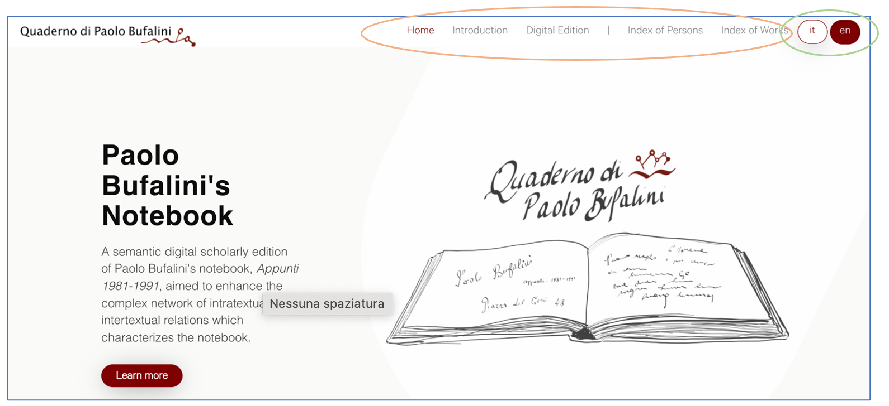 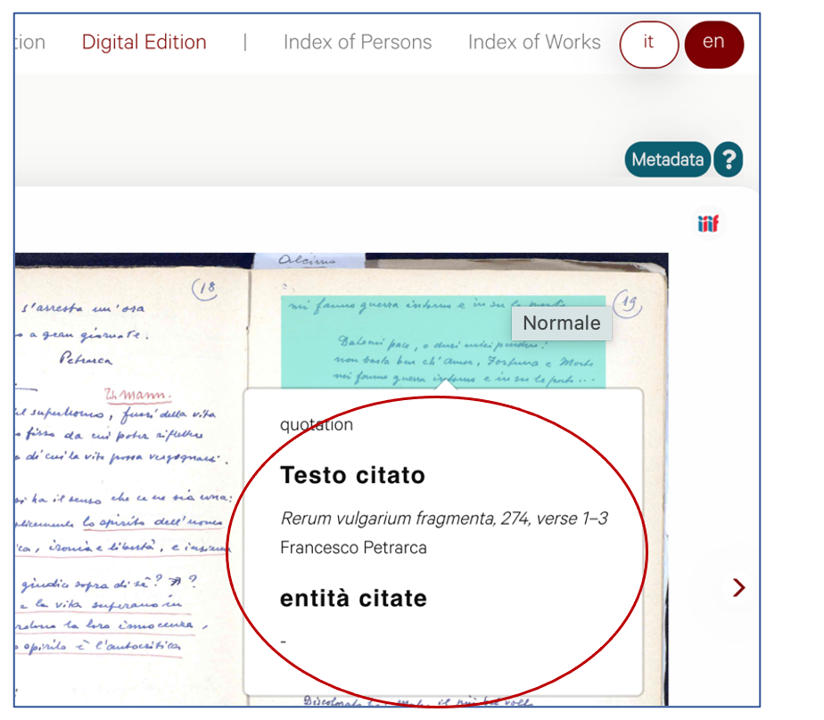
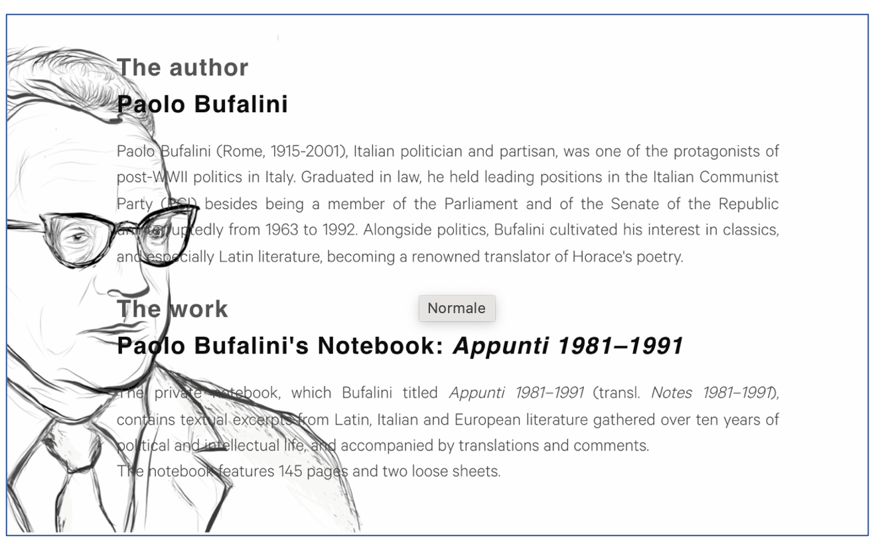
There is no area dedicated to listing the bibliographic sources, just a suggested reading for a full technical description of the edition at the end of the ‘Introduction’ page. Besides, there is a SPARQL endpoint, available through the footer, where the user can enter queries and have access to data. Since there is no further documentation about how to use it, this section is reserved for those who are familiar with this semantic query language. Finally, as the editors claim in the ‘Licences’ section (accessible from the footer), the code of the application is available under a CC0 license (Daquino, Giovannetti, and Dello Bueno 2021), the dataset of the notebook is available under a CC BY 4.0 license on AMSActa (Tomasi, Daquino, and Giovannetti 2019), whereas all rights of the notebook’s images are reserved to FICLIT Digital Library.
Usability
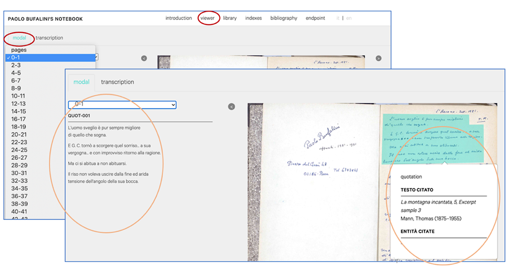 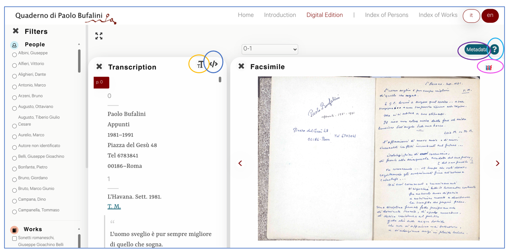
The user can arrange the window by opening or closing the box of
‘Filters’,
‘Transcription’, and ‘Facsimile’. It is a graphical strategy that
enables the user to stay focused on what he/she is interested in, keeping open the
possibility to switch modality of consulting the edition. Moreover, the user can set
the font, the size, and the background color of the transcription box (clicking on
the TT circled in orange, see Fig. 5). This page shows several useful links and
information: the question mark (‘?’) on the right (circled in light blue, Fig. 5) explains all the tools available to
discover the edition; the ‘Metadata’ (circled in purple, Fig. 5), instead, displays a brief table summarising the key
info about the PBN; the icon of IIIF (circled in pink, Fig. 5), which stands for International Image
Interoperability Framework12, is linked to the complete facsimile on the
FICLIT Digital Library; on the left, the symbol of the encoding (circled in blue,
Fig. 5) allows to download the XML/TEI
file of the notebook.
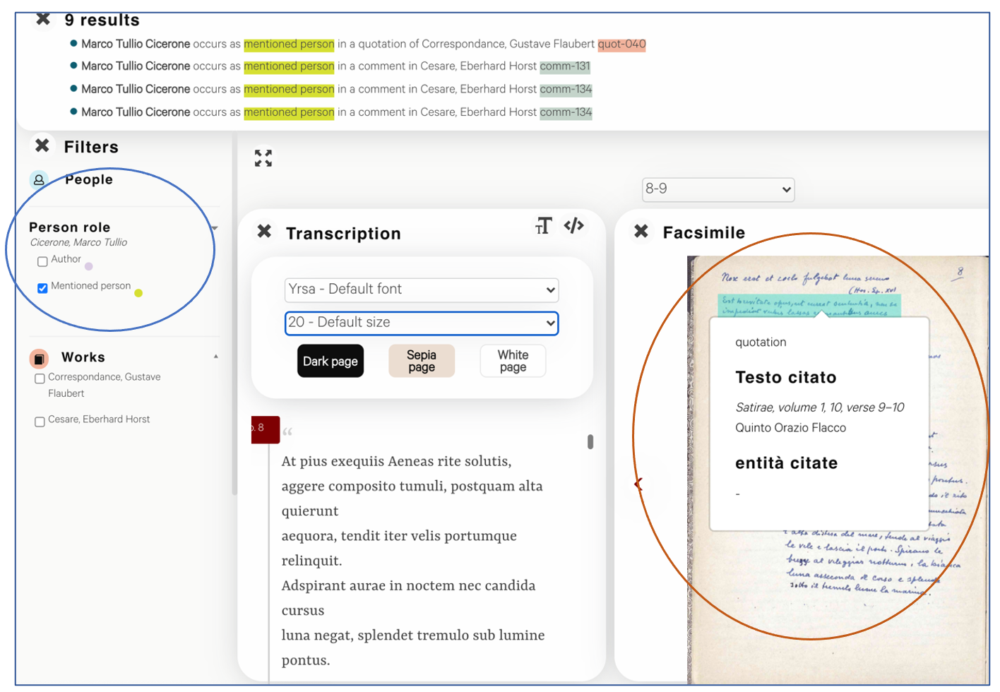
Concerning the text fruition, when the mouse cursor scrolls on a paragraph of a page in the facsimile, a frameset containing some information about that text portion (like the author of the quoted text, mentioned entities, translations, etc.) shows up on the screen (red circle, Fig. 6), whereas, clicking on it, the transcript of that portion appears on the left. The facsimile and the transcription box, indeed, are synchronized: when the user turns over the pages, the transcription automatically updates to reach the textual passage the facsimile is showing. Vice versa, by scrolling up or down on the transcription tab (that offers a sequential read, developed vertically), the facsimile quickly goes on or back to the point considered.
This elegant format makes the reading fluid and pleasant. The user does not run into the discomfort of having to open other screens to fully enjoy the text and its meaning. However, the page layout loses this harmony when you disable the full-screen mode of the browser window.
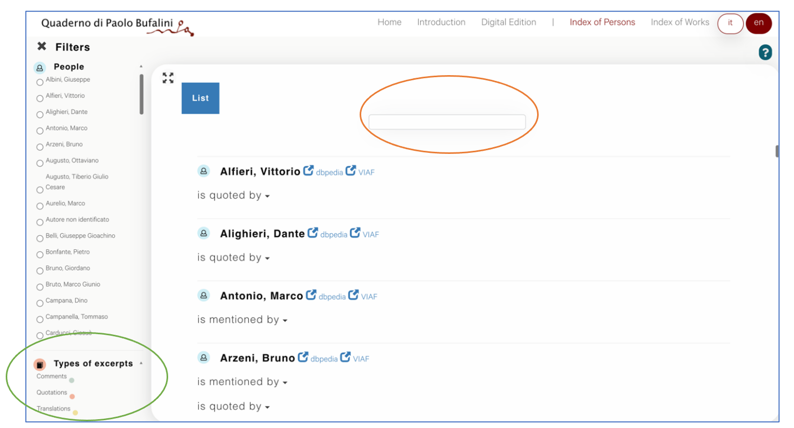
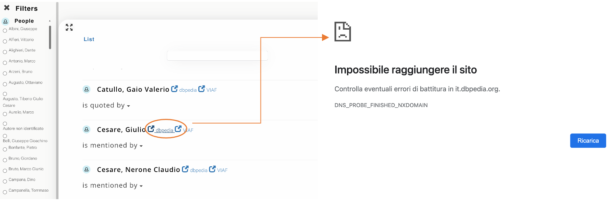 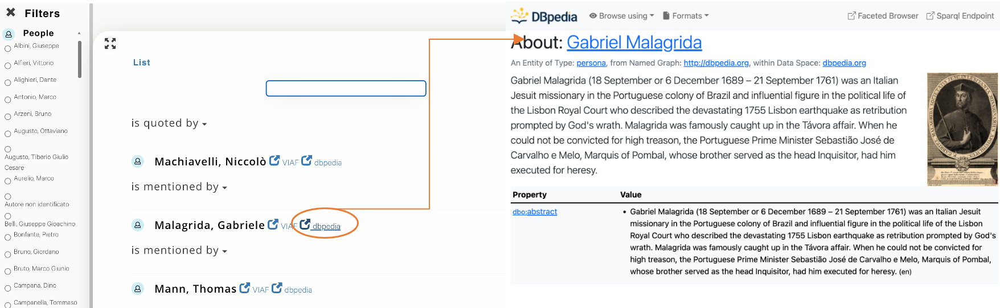
Accessibility
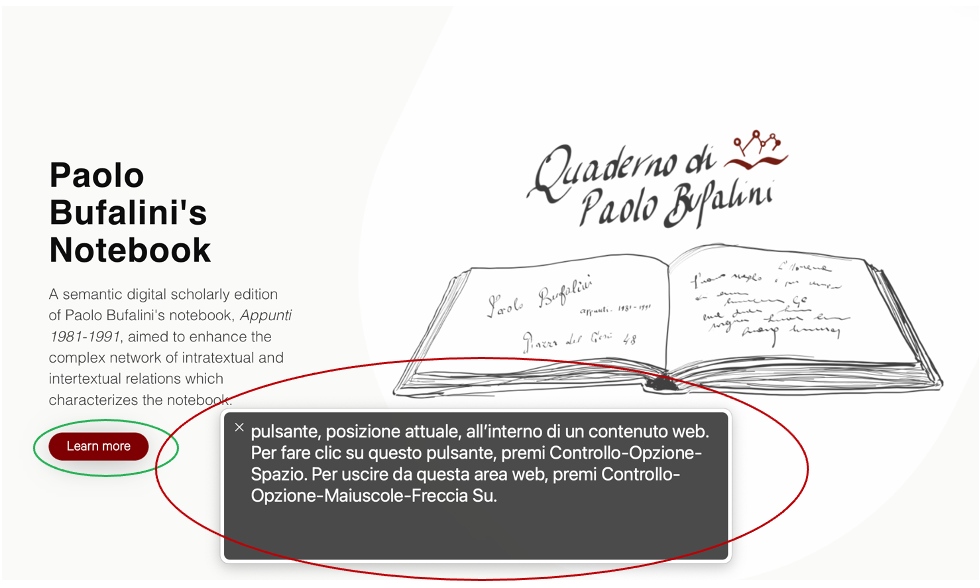
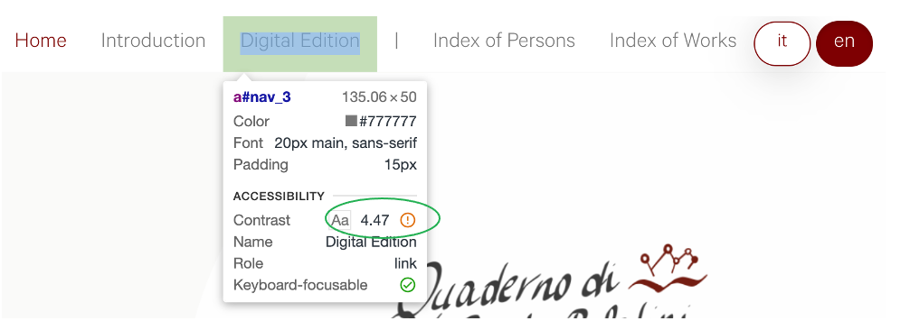 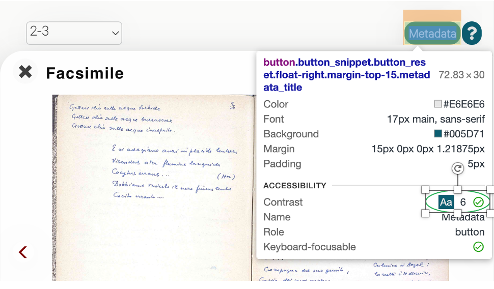 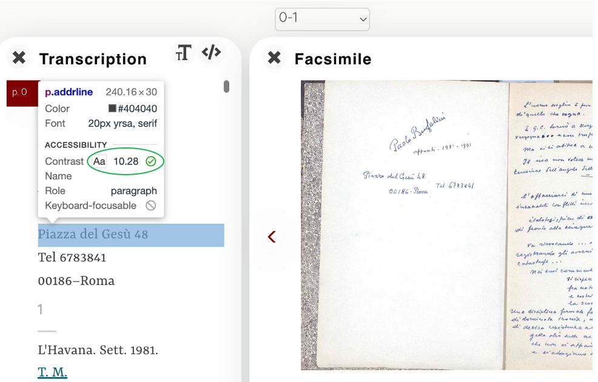
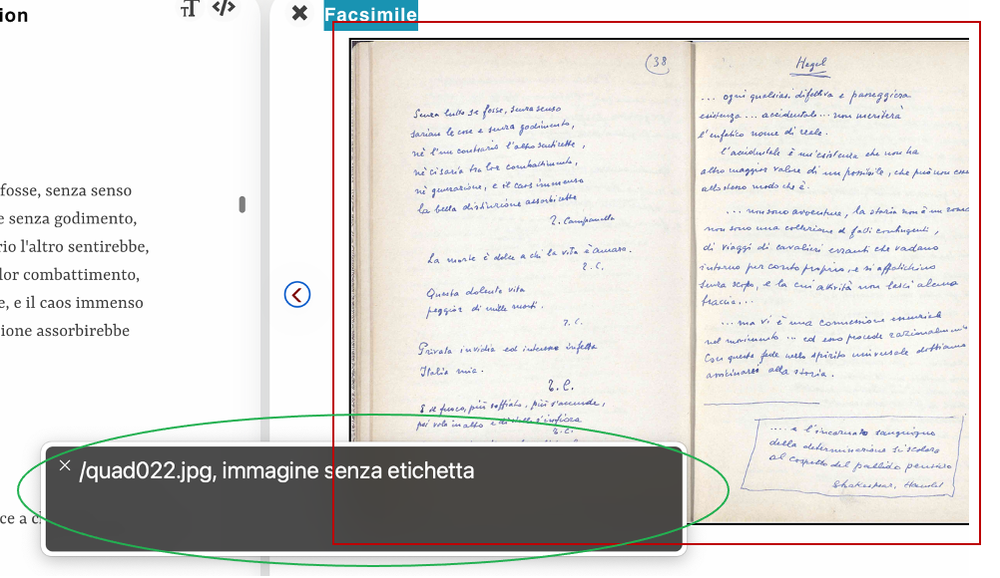
Except for this lack, the edition meets the accessibility requirements for users with disabilities.
Text criticism
Even though PBN does not devote a deep explanation to the editing principles, it is clear that the transcription made by the editors comes close to a diplomatic one. Francesco Citti writes: “all characteristics concerning spelling and punctuation, including any eventual errors or incorrect quotations were preserved. Particular marks (such as arrows, references, boxes), were reproduced and where this was not possible, were described (using notes […]” (Citti, 71). Indeed, the transcription philologically reproduces the original text, trying to maintain unaltered any passage, but in the digital edition, not all the symbols and signs are reproduced in the same way compared to what is visible in the facsimile. Some examples are given below.
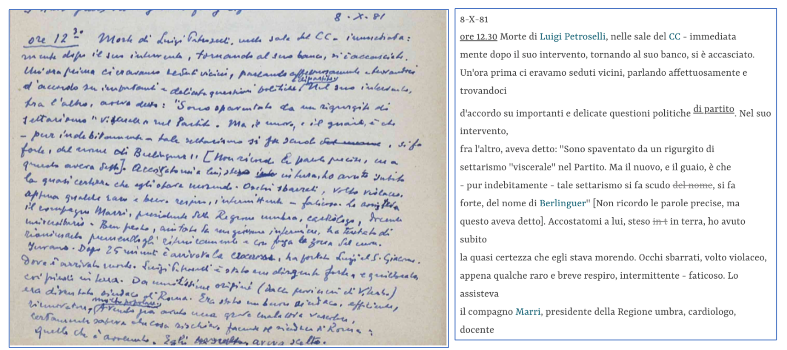
The handwriting thins out; it follows the stream of the thoughts and, therefore, runs from the hand to the sheet, the line spacing gets smaller, and the time of the story is agitated. It has been written in one go. The erasures and second thoughts, indeed, have been purposefully kept by the author. The interpretation of the passage is undoubtedly difficult because of the unclear handwriting; however, the transcription proposed by the PBN wisely reveals the sense of those words.
The transcript of the notebook is, therefore, sophisticated, but, as I wrote above, there is no documentation of the editing principles. In the ‘Philological note’ of the ‘Introduction’ page, we can read:
The transcription philologically reproduces the original text. However, in the digital edition we did not reproduce the exact symbols and signs used by the author to separate or graphically connect excerpts. Nonetheless, along with the transcription, the edition offers an interactive visualization of facsimiles, so that the reader can retrieve all the details. (Daquino et al. 2020)
A further clarification about the philological principles is, instead,
available in the section Digital edition: representation and encoding of the
‘Note-book’ of one of the main bibliographic references (Citti 2008, 71-77). The philological
principles are indeed enclosed in the XML encoding, which expresses the
interpretation of text fragments curated by the study center La Permanenza del
Classico. For instance, a markup such as <div2 type="nota"
place="margine"> is assigned to a margin note of the notebook, and
<hi rend="sottolineato"> is assigned to a graphic element of
the underlining (Citti 2008, 77). The
transcription of graphical elements is quite intuitive because of their high
resemblance with the symbols of the original pages. However, the absence of a legend
of identified marks with the corresponding meaning is not admissible for a scholarly
edition. Especially if, like in the example below (Fig. 18 and 19),
there is not an evident rule applicable everywhere.
The following is a brief list of symbols that I detected during my study of the edition:
- ▬: erasures of unrecognizable words (e.g., pp. 1, 6, 60)
- deleted: erasure of recognizable words
- insertion/insertion: insertions of a word below and above the line (e.g., pp. 60, 62, 135)
- underlining: lines traced by Bufalini
- ⧟: reproduces the equivalent sign designed by Bufalini in some pages (e.g., pp. 24-25). It is a sort of intratextual reference.
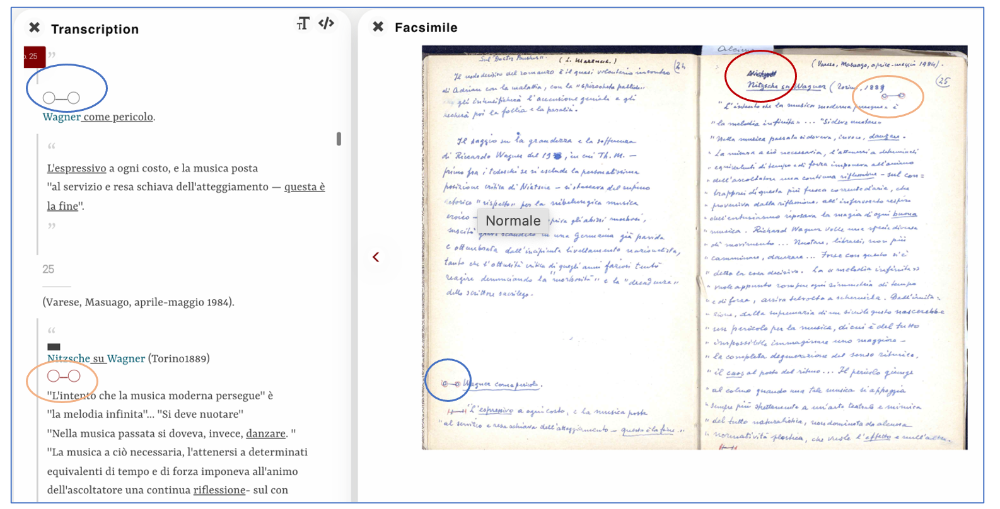 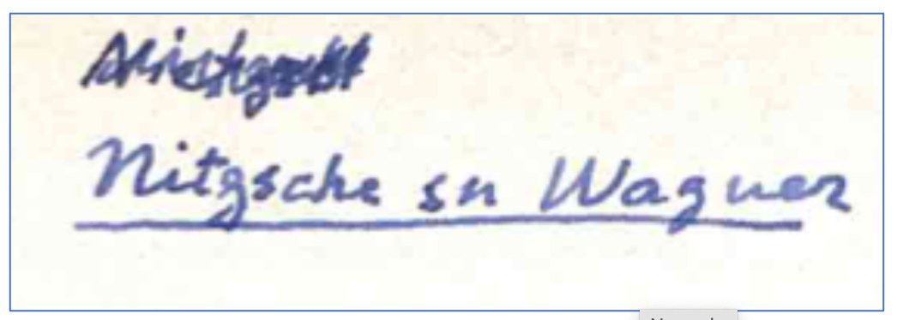
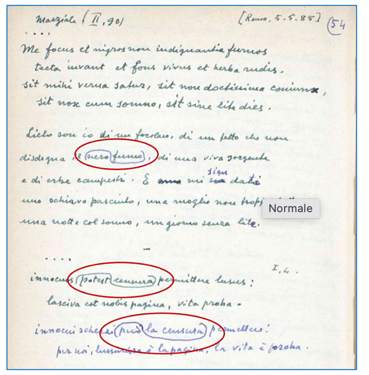
Data modelling and ontologies
The encoded transcription follows the TEI standard. In 2013, the center La Permanenza del Classico decided to migrate from TEI Lite P4 to TEI P5, and Francesca Giovannetti was charged with this task (Giovannetti 2015).
The new encoding structures the notebook into logical units that follow the physical pages. Each page is enclosed within a
<div>element and the beginning of each page is marked by the elements<pb>and<milestone>, which respectively carry a@nattribute expressing the page number as assigned by the scribe and a@unitattribute to explicit which side of folio the page corresponds to (the value is either ‘recto’ or ‘verso’). Each page is further divided into subsections marked up as<div>, each of which contains a fragment of text. Three types of fragments have been identified: quotation, comment and translation. These are distinguished by the value of the attribute@type(e.g.<div type="quotation">). The relationships between fragments are established using the attributes@correspor@ref. (Giovannetti 2015, 2-3)
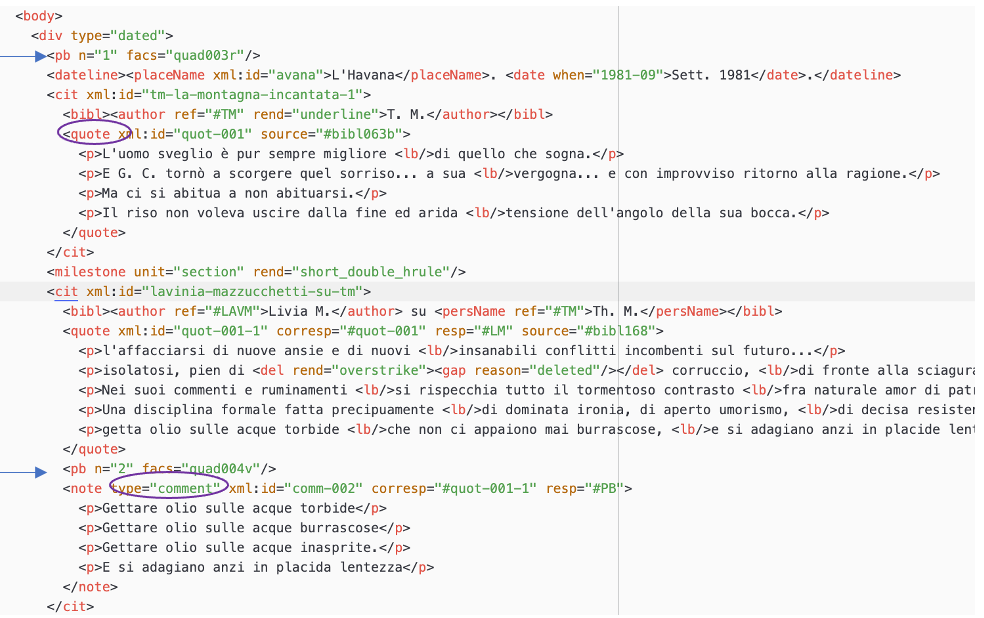
The XML/TEI file is downloadable on the ‘Digital Edition’ page, by clicking on the encoding symbol in the transcription tab. Nonetheless, it could be beneficial to provide users with an extra way of accessing the code through the ‘Home’ or ‘Introduction’ pages and possibly linking it to the ‘XML/TEI Encoding’ paragraph to make it more easily discoverable.
‘The Metamodel’ and ‘The Knowledge Graph’ paragraphs on the ‘Introduction’ page explain that in the PBN, the traditional hierarchical markup and the semantic representation of data coexist. The conversion of the XML/TEI code to RDF (Resource Description Framework), conceived by the World Wide Web Consortium (W3C), results in the creation of a main knowledge graph16 of 8K triples and other separated graphs (about 800 triples). The curators follow the nanopublication approach, according to which each group of RDF statements is accompanied by three additional graphs containing information about the assertions' provenance, the digital scholarly edition, and the nanopublication itself. The three graphs are interconnected, with one graph describing the nanopublication and linking the other three graphs.
The project team opted to reuse ontologies from Linked Open Vocabularies (LOV)17 to shape the information held by the notebook. The choice of reusing existing ontologies rather than creating new ones is an appreciable effort to enable and enhance the cooperability between researchers who can rely on this model. The representation of the main graph was designed with the Open Annotation model. The SPAR Ontologies FaBiO18 and CiTO19 are used for describing bibliographic resources and citations. Indeed, through the pages of his notebook, in search of confirmation for his intuitions, Bufalini records the words of authors and philosophers who support his beliefs. CiTO is particularly suited for reproducing these circumstances. As stated in the ‘Introduction’ page, about 800 RDF triples, which make up 10% of the knowledge base, represent Bufalini's notions regarding the relationships between the texts and authors in the notebook. To capture these ideas, HiCO, an ontology that expands on PROV-O and enables the specification of a statement's source, is employed.
Long term use
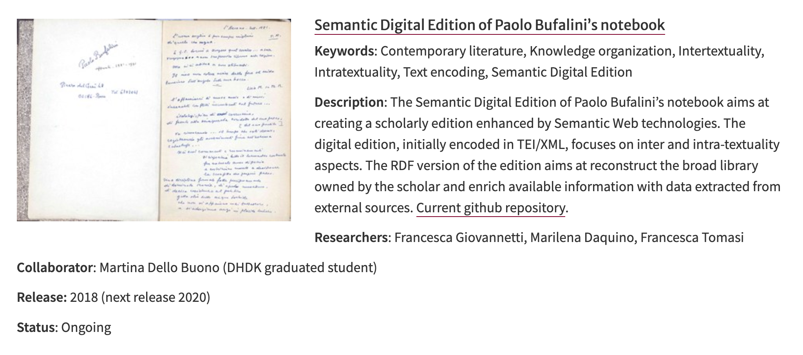
Additionally, the PBN GitHub repository21 shows that the last update was made precisely two years ago. It is uncertain whether there is institutional support to ensure the edition's long-term sustainability and provide lasting access. Therefore, it would be beneficial to inform users of the edition about these details.
Conclusion
PBN fulfils some of the main requirements that a Scholarly Digital Edition should meet: it offers a critical representation of the historical document that is Paolo Bufalini’s notebook and it is guided by a digital paradigm. However, it lacks a deep philological documentation. Indeed, a potential printed version of this edition would lose contents and functionalities detained by the current one. The user is invited to interact with the system and to consult its metadata, to access reliable sources and a correct transcription, and its editors have the merit of sharing a high-value work previously unpublished. Besides, the work done for extending the reality of the edition to the Semantic Web environment is what makes this digital edition innovative and different from the others available nowadays. According to Patrick Sahle’s catalog of Digital Scholarly Edition22, indeed, among more than 700 cases of studies, only one makes use of Semantic Web technologies, and it is burckhardtsource project23, a semantic Digital Library that hosts the critical and semantic edition of the letters written to Jacob Burckhardt.
The decisions that have guided PBN are described, but the lack of detailed documentation of the project represents a flaw. Conveying all the information about the project (currently spread into different scholarly articles24, mainly written by the same editors) on the PBN page would make it a self-sufficient source.
Moreover, the notebook also appears very suitable for a critical edition with a critical commentary. Thanks to the dates noted by Bufalini at the top of some pages, it could be interesting to investigate some possible connections between his philosophical reflections and the coeval social and historical context, during which, let me stress, Bufalini still served as senator of the Republic. This is just an idea that genuinely came to me while leafing through the notebook. Alternatively, another suggestion could be to conduct a technical analysis of the various pens25 used by the author over ten years, which could unveil, for instance, the timing and the meaning of some comments and the underlining. So why not think about extending the ambitions and aims of the edition to a wider work in the future?
Therefore, PBN is a valuable project that achieves a good result in terms of visualization of the facsimile, accessibility, and usability; it has a modern style that makes the fruition of the site an enjoyable experience and provides a well-done transcription of an unpublished work. In conclusion, although the editors did not mention further extensions of the edition, I would suggest they deal with some of the weaknesses of the edition and fully realize the high potential of PBN.
Bibliography
- Citti, Francesco. 2008. “Paolo Bufalini and the classics: towards a digital edition of his ‘Note-Book’”. Conservation Science in Cultural Heritage, 8(1): 65-89. https://doi.org/10.6092/issn.1973-9494/1396.
- Daquino, Marilena, Francesca Giovannetti, and Francesca Tomasi. 2019. “Linked Data per le edizioni scientifiche digitali. Il workflow di pubblicazione dell’edizione semantica del quaderno di appunti di Paolo Bufalini”. Umanistica Digitale, 3(7). https://doi.org/10.6092/issn.2532-8816/9091.
- Daquino, Marilena, Francesca Giovannetti, and Martina Dello Buono. 2021. “Paolo Bufalini's notebook”. GitHub.com. https://github.com/marilenadaquino/bufalinis-notebook.
- Daquino, Marilena, Martina Dello Buono, Francesca Giovannetti, and Francesca Tomasi. 2020. “Paolo Bufalini, Appunti (1981-1991)” [Semantic Scholarly Digital Edition]. Digital Humanities Advanced Research Centre (/DH.arc), https://doi.org/10.6092/unibo/amsacta/6415.
- DL FICLIT, “Paolo Bufalini, ‘Appunti 1981-1991’ (quaderno manoscritto)” https://dl.ficlit.unibo.it/s/lib/item/198982.
- Giovannetti, Francesca. 2013. “Paolo Bufalini, Appunti (1981-1991). Una Proposta di Edizione Digitale.” Bachelor’s degree thesis in Digital Humanities. Alma Mater Studiorum University of Bologna.
- Giovannetti, Francesca. 2015. “Combining TEI and Semantic Web Technologies to Annotate and Explore the Notebook of Paolo Bufalini (1915-2001)”, Master Thesis. Alma Mater Studiorum University of Bologna.
- Matteoli, Giovanni. 2002. “Paolo Bufalini. L’impegno politico di un intellettuale”, Catanzaro, Rubbettino.
- Nielsen, Jakob. 2012. “Usability 101: Introduction to Usability”. Nielsen Norman Group. https://www.nngroup.com/articles/usability-101-introduction-to-usability/.
- Sahle, Patrick. 2008–2023. A Catalog of Digital Scholarly Editions, Version 3.0. https://v3.digitale-edition.de/.
- Tomasi, Francesca, Marilena Daquino, and Francesca Giovannetti. 2019 “Paolo Bufalini. Quaderno di appunti (1981-1991)”. Dh.arc. https://doi.org/10.6092/unibo/amsacta/6415.
Notes
- “the best energies of the generations of anti-fascism, War and Resistance” translated by the author of this review. ↑
- See https://www.unibo.it/sitoweb/francesca.tomasi/en. ↑
- See https://www.unibo.it/sitoweb/marilena.daquino2/en. ↑
- See https://www.unibo.it/sitoweb/francesc.giovannett6/en. ↑
- See https://www.unibo.it/sitoweb/martina.dellobuono2/en. ↑
- The above information about the professional career path of the editors and their responsibilities in the project is available in the section ‘Credits’, accessible through a hyperlink in the footer of the ‘Home’ and ‘Introduction’ pages. Once the page ‘Credits’ is opened, other hypertextual links enable the user to directly see their own home page in the Alma Mater Studiorum official website. There is no logo of the Alma Mater University, but in the footer, a brief section is devoted to giving information and links to DH.arc -Digital Humanities Advanced Research Centre. ↑
- A translation of this passage is available in Citti 2008, 66: “The Note-book is a kind of moral ‘note-book’, in which he gathers together his own thoughts and those of other writers, written during various moments of his free time, a break in a meeting or assembly or during a journey, to Cuba for example, odd moments of reflection in which his soul took refuge and was calmed.” ↑
- https://centri.unibo.it/permanenza/it/attivita-ed-eventi/quaderni-di-paolo-bufalini. ↑
- Translation by the author: “Many of the EDSs available online today adopt a document-centric structure. [...] This is the typical paradigm of printing, transported from the analogue to the digital environment. The expansion of the Web of data calls for the redefinition of the concept of ESD by the academic community. The ESD [...] has to be rethought as a set of entities, that also means resources uniquely identified with URIs and interconnected through the use of typed links (the RDF properties), according to a data-centric paradigm.” ↑
- The FICLIT Digital Library (https://web.archive.org/web/20231101071744/https://dl.ficlit.unibo.it/s/lib/item/198982) provides some further information about the physical characteristics of the manuscript codex, like details on its format and the color of the cover. ↑
- This detail is omitted on the official PBN page. Look at Citti 2008 , 67. ↑
- International Image Interoperability Framework. https://iiif.io/. ↑
- Therefore, to have the identifier of Vittorio Alfieri, for example, the link should be https://dbpedia.org/page/VittorioAlfieri and not http://it.dbpedia.org/resource/VittorioAlfieri. ↑
- I used VoiceOver by Apple. An explanation about how it works is available at https://support.apple.com/guide/voiceover/welcome/10#/. ↑
- For further information about contrast value, see https://www.w3schools.com/accessibility/accessibility_color_contrast.php . ↑
- http://projects.dharc.unibo.it/bufalini-notebook/resource/edition/. ↑
- Linked Open Vocabularies (LOV). https://lov.linkeddata.es/dataset/lov. ↑
- FaBiO, the FRBR-aligned Bibliographic Ontology. https://sparontologies.github.io/fabio/current/fabio.html. ↑
- CiTO, the Citation Typing Ontology. https://sparontologies.github.io/cito/current/cito.html. ↑
- Projects at /DH.arc. https://centri.unibo.it/dharc/en/research/projects-at-dh-arc. ↑
- Daquino, Giovannetti, and Dello Buono 2021. ↑
- Sahle 2008-2023. ↑
- burckhardtsource project. https://burckhardtsource.org/. ↑
- Citti 2008 and Daquino, Giovannetti, and Tomasi 2019. ↑
- Bufalini used black, blue, red, and even green pens. He sometimes took a pencil to underline pieces of text written with the pen. Page 140 of the notebook shows this mixture well. ↑
@article{bufalini,
author = {Ammirati, Luisa},
title = {Paolo Bufalini’s Notebook},
journal = {RIDE – A review journal for digital editions and resources},
number = {18},
year = {2023},
doi = {10.18716/ride.a.18.3},
url = {https://doi.org/10.18716/ride.a.18.3},
}TY - JOUR
AU - Ammirati, Luisa
TI - Paolo Bufalini’s Notebook
T2 - RIDE – A review journal for digital editions and resources
IS - 18
PY - 2023
DA - 2023/12
DO - 10.18716/ride.a.18.3
UR - https://doi.org/10.18716/ride.a.18.3
PB - Institut für Dokumentologie und Editorik e.V.
LA - en
ER - Ammirati, L. (2023). Paolo Bufalini’s Notebook. RIDE – A review journal for digital editions and resources, (18). https://doi.org/10.18716/ride.a.18.3Ammirati, Luisa. "Paolo Bufalini’s Notebook." RIDE – A review journal for digital editions and resources, no. 18, 2023. https://doi.org/10.18716/ride.a.18.3.Ammirati, Luisa. "Paolo Bufalini’s Notebook." RIDE – A review journal for digital editions and resources, no. 18 (2023). https://doi.org/10.18716/ride.a.18.3.